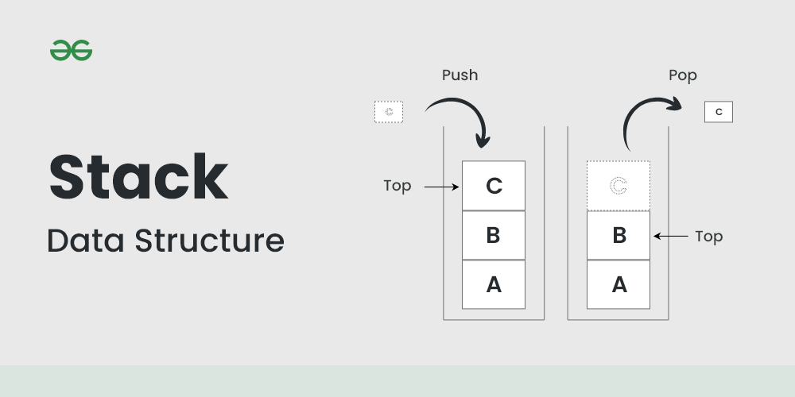

입력과 출력이 한 곳(방향)으로 제한
LIFO (Last In First Out, 후입선출) : 가장 나중에 들어온 것이 가장 먼저 나옴
언제 사용하나?
함수의 콜스택, 문자열 역순 출력, 연산자 후위표기법
데이터 넣음 : push()
데이터 최상위 값 뺌 : pop()
비어있는 지 확인 : isEmpty()
꽉차있는 지 확인 : isFull()
push와 pop할 때는 해당 위치를 알고 있어야 하므로 기억하고 있는 '스택 포인터(SP)'가 필요함
스택 포인터는 다음 값이 들어갈 위치를 가리키고 있음 (처음 기본값은 -1)
private int sp = -1;- push
public void push(Object o) {
if(isFull(o)) {
return;
}
stack[++sp] = o;
}- 스택 포인터가 최대 크기와 같으면 return
- 아니면 스택의 최상위 위치에 값을 넣음
- pop
public Object pop() {
if(isEmpty(sp)) {
return null;
}
Object o = stack[sp--];
return o;
}- 스택 포인터가 0이 되면 null로 return;
- 아니면 스택의 최상위 위치 값을 꺼내옴
- isEmpty
private boolean isEmpty(int cnt) {
return sp == -1 ? true : false;
}- 입력 값이 최초 값과 같다면 true, 아니면 false
- isFull
private boolean isFull(int cnt) {
return sp + 1 == MAX_SIZE ? true : false;
}- 스택 포인터 값+1이 MAX_SIZE와 같으면 true, 아니면 false